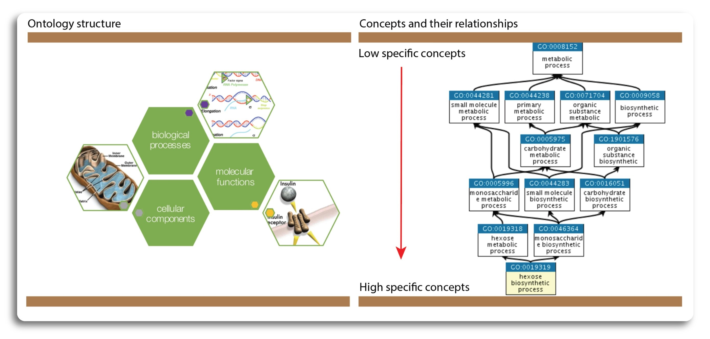
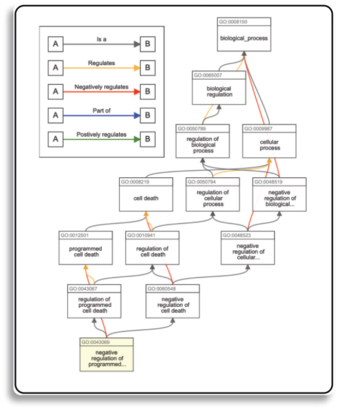
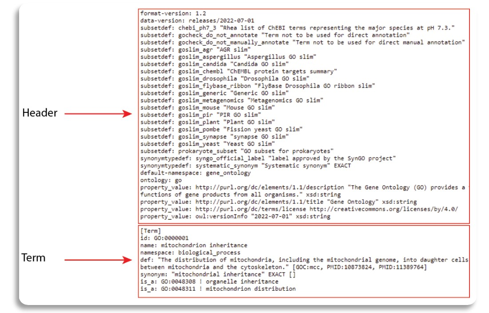
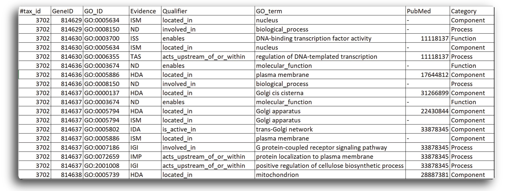
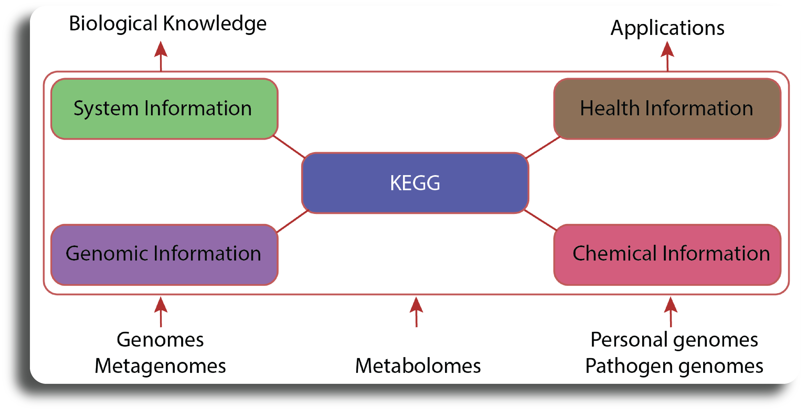

Ontology and Gene Ontology
Contents
# Gene set and pathway

Differential expression (DE) analysis typically yields a list of genes or proteins that require further interpretation.
Our intention is to use such lists to gain novel insights about genes and proteins that may have roles in a given
phenomenon, phenotype or disease progression. However, in many cases, gene lists generated from DE analysis are
difficult to interpret due to their large size and lack of useful annotations. Hence, pathway analysis (also known
as gene set analysis or over-representation analysis), aims to reduce the complexity of interpreting gene lists
via mapping the listed genes to known (i.e. annotated) biological pathways, processes and functions.
This learning module introduces common curated biological databases including Gene Ontology (GO),
Kyoto Encyclopedia of Genes and Genomes (KEGG).
## Learning Objectives:
1. Introduction to Ontology and Gene Ontology.
2. Introduction to KEGG Pathway Database.
3. Downloading terms, pathway gene set from GO and KEGG.
4. Saving results to GMT file format.
Error in parse(text = x, srcfile = src): <text>:3:2: unexpected '['
2:
3: ![
^
Traceback:
Ontology and Gene Ontology#
Overview#
In this section we will learn about the concept of gene ontology in Bioinformatics. Ontology is a specification of a conceptualization which is a set of concepts within a domain, defined by a shared vocabulary to denote the types and properties of the concepts as well as the relationships between the concepts. Ontology plays an important role in the field of bioinformatics. Ontology enable communicate unambiguously e.g., to understand across different groups’ annotations of various genomes. Also, it allows the knowledge to be represented in a computable and structured to perform automated analyses by computer programs.
The Gene Ontology (GO) defines a structured, common, controlled vocabulary to describe attributes of genes and gene products across organisms. Collaboration is key to build a consensus vocabulary. But the term gene ontology, or GO, is commonly used to refer to both, which is sometimes a source of potential confusion. In order to avoid this, here we will use the term “GO” to describe the set of terms and their hierarchical structure and “GO annotations” to describe the set of associations between genes and GO terms. The GO is divided into three categories to describe the genes and gene products from three different angles: Molecular Function, Biological Process, and Cellular Component.
The structure of GO can be described in terms of into directed acyclic graphs (DAGs), where each GO term is a node, and the relationships between the terms are edges between the nodes. GO is loosely hierarchical, with ‘child’ terms being more specialized than their ‘parent’ terms, but unlike a strict hierarchy, a term may have more than one parent term (note that the parent/child model does not hold true for all types of relations). The structure of the controlled vocabularies are intended to reflect true, biological relationships. In contrast to strict hierarchies, DAGS allow multiple relationships between a more granular (child) term and a more general parent term. The relationship between terms affects how queries are made. For example,a query for all genes with binding activity would include transcription factors as well as genes with other types of binding activity (such as protein binding, ligand binding). The illustration of category and structure of GO is shown in the figure below:
 (Source: https://www.ebi.ac.uk/, http://geneontology.org/)
Gene ontology relationship#
In DAGs graph, terms are represented as nodes and relations (also known as object properties) between the terms are edges. There are commonly used relationships in GO such as is a (is a subtype of), part of, has part, regulates, negatively regulates and positively regulates. All terms (except from the root terms representing each aspect) have an is a sub-class relationship to another terms.
Examples:
is a relation
GO:1904659:glucose transport is a GO:0015749:monosaccharide transport.
The is a relation forms the basic structure of GO. If we say A is a B, we mean that node A is a subtype of node B
is part of relation
GO:0031966:mitochondrial membrane is part of GO:0005740:mitochondrial envelope
The part of relation is used to represent part-whole relationships. A part of relation would only be added between A and B if B is necessarily part of A: wherever B exists, it is as part of A, and the presence of the B implies the presence of A. However, given the occurrence of A, we cannot say for certain that B exists.
regulates relation
GO:0098689:latency-replication decision regulates GO:0019046:release from viral latency
A relation that describes case in which one process directly affects the manifestation of another process or quality, i.e. the former regulates the latter.
A more specific case with more nodes and edges can be seen at the figure below:

(Source: https://advaitabio.com/)
For more technical information about relations and their properties used in GO and other ontologies see the
OBO Relations Ontology (RO)
GO storage file formats#
GO terms are updated monthly in the following formats:
OBO 1.4 files are human-readable (in addition to machine-readable) and can be opened in any text editor.
OWL files can be read by Protégé text editor.
In this learning module, we will only use “.OBO” to obtain GO terms.The OBO file format is for representing ontologies and controlled vocabularies. The format itself attempts to achieve the following goals:
Human readability
Ease of parsing
Extensibility
Minimal redundancy
The file structure can is shown in the following figure.

The OBO file has a header which is an unlabeled section at the beginning of the document. The header ends when the first term is encountered. Next, term is represented in labeled section with the tag [Term]. Under each term, we can find other information such as term ID, official name, category (namcespace), term definition, synonym and relation to other GO term.
At this step, we still don’t know what genes are related to which GO terms. In order to retrieve custom sets of gene ontology annotations for any list of genes from organisms, NCBI has published a Gene2GO database that obtain GO terms and the entrez gene ids related to those go terms. The database can be retrieve from here text editor. The Gene2GO database can be viewed using text editor, the file structure is presented in the figure below:

The OBO and Gene2GO databases will be used in combination to obtain GO term and related genes for enrichment analysis.
Retrieving GO terms from DE gene list#
This section focuses on downloading related GO terms based on the DE genelist obtained from the DE analysis in the previous section.
Here, we will use toGO and hgu133plus2.db R packages to obtain GO terms. The topGO package has built-in functions that use Gene2GO databases to retrieve GO terms from the gene ID give by DE analysis. Since the dataset we used in the Module 02 was generated for human, we will use hgu133plus2.db database to map probeID to gene symbols.
The installation process of two package can be done by the script below:
# Installation of topGO and hgu133plus2.db package
suppressMessages({if (!require("BiocManager", quietly = TRUE))
install.packages("BiocManager")
suppressWarnings(BiocManager::install("topGO", update = F))
suppressWarnings(BiocManager::install("hgu133plus2.db", update = F))
})
# Loading the library
suppressPackageStartupMessages({
library("topGO")
library("hgu133plus2.db")
})
package 'bit' successfully unpacked and MD5 sums checked
package 'cachem' successfully unpacked and MD5 sums checked
package 'bit64' successfully unpacked and MD5 sums checked
package 'blob' successfully unpacked and MD5 sums checked
package 'memoise' successfully unpacked and MD5 sums checked
package 'pkgconfig' successfully unpacked and MD5 sums checked
package 'plogr' successfully unpacked and MD5 sums checked
package 'RSQLite' successfully unpacked and MD5 sums checked
package 'graph' successfully unpacked and MD5 sums checked
package 'Biobase' successfully unpacked and MD5 sums checked
package 'AnnotationDbi' successfully unpacked and MD5 sums checked
package 'SparseM' successfully unpacked and MD5 sums checked
package 'lattice' successfully unpacked and MD5 sums checked
package 'matrixStats' successfully unpacked and MD5 sums checked
package 'DBI' successfully unpacked and MD5 sums checked
package 'topGO' successfully unpacked and MD5 sums checked
The downloaded binary packages are in
C:\Users\bangt\AppData\Local\Temp\RtmpYvgQrE\downloaded_packages
groupGOTerms: GOBPTerm, GOMFTerm, GOCCTerm environments built.
Load the DE genelist generated from the DE analysis.
data = readRDS("./data/DE_genes.rds")
By default, the DE analysis performed by limma contains multiple features. However, adjusted p-value and gene ID are the most important features for enrichment analysis. We can use the following code to list of gene IDs and their p-value.
# Get p-value from DE results
genelist <- data$adj.P.Val
# Assgin gene IDs to associated p-values
names(genelist) <- data$ID
After successfully obtaining the genelist, we need to map the gene IDs to the gene symbols using hgu133plus2.db.
# Map gene IDs to gene symbols
gene <- select(hgu133plus2.db, names(genelist), "SYMBOL")
# Remove duplicated gene IDs
gene <- gene[!duplicated(gene[,1]),]
# Assign result to a new genlist with gene symbols
geneList2 <- genelist
names(geneList2) <- gene[,2]
'select()' returned 1:many mapping between keys and columns
Now, we can search for related GO terms based on the new gene list using topGO package. First, we need to create a topGOdata
object.
GOdata <- new("topGOdata", description = "",ontology = "BP",
allGenes = geneList2, geneSel = function(x)x, nodeSize = 10,
annot = annFUN.org, ID = "alias", mapping = "org.Hs.eg")
Building most specific GOs .....
( 2203 GO terms found. )
Build GO DAG topology ..........
( 5410 GO terms and 11936 relations. )
Annotating nodes ...............
( 478 genes annotated to the GO terms. )
We can search for related GO terms using geneInTerm function and view the term with associated genes.
allGO = genesInTerm(GOdata)
allGO[1:5]
- $`GO:0000003`
-
- 'ALDOA'
- 'ALKBH1'
- 'ARID5B'
- 'ATP2B2'
- 'B4GALT1'
- 'BRF1'
- 'CACNA1H'
- 'CCDC40'
- 'CCNB1'
- 'CCNE1'
- 'CD9'
- 'CFAP157'
- 'CFAP54'
- 'CYLC1'
- 'EHMT2'
- 'ESR1'
- 'FAM170A'
- 'FKBP6'
- 'FOLR2'
- 'FUT10'
- 'GAMT'
- 'HGF'
- 'HYAL3'
- 'IGFBP7'
- 'LY6K'
- 'MYCBPAP'
- 'OAZ3'
- 'OVOL1'
- 'PCDH12'
- 'QRICH2'
- 'SIX5'
- 'SLX4'
- 'SPATA6L'
- 'ST14'
- 'STK11'
- 'STK35'
- 'TAC1'
- 'TEKT2'
- 'TLE6'
- 'TMEM95'
- 'TRIM27'
- 'YBX2'
- $`GO:0000122`
-
- 'ARID5B'
- 'BARX2'
- 'CCNE1'
- 'CTBP1'
- 'CUX2'
- 'EHMT2'
- 'ESR1'
- 'GLIS3'
- 'GRIP1'
- 'HIF1AN'
- 'HOPX'
- 'HOXA7'
- 'LMO1'
- 'NR2F6'
- 'OTUD7B'
- 'OVOL1'
- 'RTF1'
- 'RUNX3'
- 'SP100'
- 'SPDEF'
- 'SREBF1'
- 'TAF1'
- 'TAL1'
- 'TGIF2'
- 'TLE6'
- 'TMPRSS6'
- 'TPR'
- 'TRIM27'
- 'TRIM37'
- 'WWC2'
- 'WWTR1'
- 'ZBTB45'
- 'ZC3H8'
- 'ZNF345'
- $`GO:0000165`
-
- 'ADRB3'
- 'BRF1'
- 'CCL22'
- 'CLEC7A'
- 'COPS5'
- 'FGD2'
- 'FGF18'
- 'FGF4'
- 'HGF'
- 'LILRA5'
- 'MAP4K1'
- 'NCF1'
- 'NENF'
- 'P2RY6'
- 'PRDX2'
- 'PRMT1'
- 'RAP2A'
- 'RB1CC1'
- 'SERPINF2'
- 'SLAMF1'
- 'STYX'
- 'TEK'
- 'TNIP1'
- 'WNK2'
- $`GO:0000226`
-
- 'ANKFN1'
- 'ARHGEF7'
- 'ATF5'
- 'CCDC40'
- 'CCNB1'
- 'CDC14A'
- 'CFAP100'
- 'CFAP157'
- 'CNTROB'
- 'DCLK2'
- 'DCTN1'
- 'DNAAF8'
- 'DST'
- 'GAS2L2'
- 'RAE1'
- 'TACC3'
- 'TEKT2'
- 'TLE6'
- 'TPR'
- 'TRAF3IP1'
- 'TRIM37'
- 'TUBB4B'
- 'ZMYND10'
- 'ZPR1'
- $`GO:0000278`
-
- 'ANKFN1'
- 'BRF1'
- 'CCNB1'
- 'CCNE1'
- 'CDC14A'
- 'CDC5L'
- 'CNTROB'
- 'DCTN1'
- 'DCTN3'
- 'DSCC1'
- 'FBXL17'
- 'GSPT1'
- 'HASPIN'
- 'HGF'
- 'OVOL1'
- 'PBRM1'
- 'PML'
- 'RAE1'
- 'SMC5'
- 'SPTBN1'
- 'TACC3'
- 'TAL1'
- 'TPR'
- 'TRIAP1'
- 'TUBB4B'
- 'VCPIP1'
- 'ZPR1'
Now, we already had GO terms with genes. However, we still do not know the meaning of GO terms related to biological process. We can use GO.db database to get a set of annotation maps describing the entire Gene Ontology assembled using data from GO. We can use the following code to install the GO.db R package.
suppressMessages({if (!require("BiocManager", quietly = TRUE))
install.packages("BiocManager")
suppressWarnings(BiocManager::install("GO.db", update = F))
})
library(GO.db)
Then, we can use the following command to obtain the GO terms description.
terms <- names(allGO)
descriptions <-lapply(Term(terms), `[[`, 1)
.libPaths()
- 'C:/Users/bangt/AppData/Local/R/win-library/4.2'
- 'C:/Users/bangt/anaconda3/envs/NOSI/Lib/R/library'
In order to perform enrichment analysis in later module, we need to save the GO terms and genesets to the standard output. One commonly used format is Gene Matrix Transposed file format (*.gmt). The GMT file format is a tab delimited file format that describes gene sets. In the GMT format, each row represents a gene set; in the GMX format, each column represents a gene set. Here, we can save GO terms and genesets to the *.gmt using the following function:
writeGMT <- function(genesets, descriptions, outfile) {
if (file.exists(outfile)) {
file.remove(outfile)
}
for (gs in names(genesets)) {
write(c(gs, gsub("\t", " ", descriptions[[gs]]), genesets[[gs]]), file=outfile, sep="\t", append=TRUE, ncolumns=length(genesets[[gs]]) + 2)
}
}
outfile <- "./data/GO_terms.gmt"
writeGMT(allGO, descriptions, outfile)
Kyoto Encyclopedia of Genes and Genomes (KEGG)#
Overview#
KEGG is a collection of databases dealing with genomes, biological pathways, diseases, drugs, and chemical substances. KEGG is utilized for bioinformatics research and education, including data analysis in genomics, metagenomics, metabolomics and other omics studies, modeling and simulation in systems biology, and translational research in drug development. The KEGG database project was initiated in 1995 by Minoru Kanehisa, professor at the Institute for Chemical Research, Kyoto University, under the then ongoing Japanese Human Genome Program. Foreseeing the need for a computerized resource that can be used for biological interpretation of genome sequence data, he started developing the KEGG PATHWAY database. It is a collection of manually drawn KEGG pathway maps representing experimental knowledge on metabolism and various other functions of the cell and the organism. Each pathway map contains a network of molecular interactions and reactions and is designed to link genes in the genome to gene products (mostly proteins) in the pathway. This has enabled the analysis called KEGG pathway mapping, whereby the gene content in the genome is compared with the KEGG PATHWAY database to examine which pathways and associated functions are likely to be encoded in the genome. KEGG is a “computer representation” of the biological system. It integrates building blocks and wiring diagrams of the system—more specifically, genetic building blocks of genes and proteins, chemical building blocks of small molecules and reactions, and wiring diagrams of molecular interaction and reaction networks. The illustrative structure of KEGG is presented as figure below. 
Retrieving pathways from KEGG databases#
In this section, we will retrieve pathways and related gensets from the KEGG database using R command line. Here we will use KEGGREST R package that provides a client interface to the KEGG REST server. KEGGREST can be installed from the Bioconductor using following command.
suppressMessages({if (!require("BiocManager", quietly = TRUE))
install.packages("BiocManager")
suppressWarnings(BiocManager::install("KEGGREST", update = F))
})
suppressPackageStartupMessages({
library(KEGGREST)
})
library(KEGGREST)
KEGG exposes a number of databases. To get an idea of what is available, run listDatabases():
KEGGREST::listDatabases()
- 'pathway'
- 'brite'
- 'module'
- 'ko'
- 'genome'
- 'vg'
- 'ag'
- 'compound'
- 'glycan'
- 'reaction'
- 'rclass'
- 'enzyme'
- 'disease'
- 'drug'
- 'dgroup'
- 'environ'
- 'genes'
- 'ligand'
- 'kegg'
We can use these databases in further queries. Note that in many cases you can also use a three-letter KEGG organism code or a “T number” (genome identifier) in the same place you would use one of these database names.
We can obtain the list of organisms available in KEGG with the keggList() function:
organism <- keggList("organism")
print(paste0("KEGG supports ",dim(organism)[1]," organisms"))
[1] "KEGG supports 8361 organisms"
To view the supported organism we can use the following command:
head(organism)
| T.number | organism | species | phylogeny |
|---|---|---|---|
| T01001 | hsa | Homo sapiens (human) | Eukaryotes;Animals;Vertebrates;Mammals |
| T01005 | ptr | Pan troglodytes (chimpanzee) | Eukaryotes;Animals;Vertebrates;Mammals |
| T02283 | pps | Pan paniscus (bonobo) | Eukaryotes;Animals;Vertebrates;Mammals |
| T02442 | ggo | Gorilla gorilla gorilla (western lowland gorilla) | Eukaryotes;Animals;Vertebrates;Mammals |
| T01416 | pon | Pongo abelii (Sumatran orangutan) | Eukaryotes;Animals;Vertebrates;Mammals |
| T03265 | nle | Nomascus leucogenys (northern white-cheeked gibbon) | Eukaryotes;Animals;Vertebrates;Mammals |
In the Module 02, we performed DE analysis on human dataset. Therefore, we need to download pathways for human, the abbreviation of human pathway in KEGG is hsa and we can use keggList function to get the pathway list.
pathways.list <- keggList("pathway", "hsa")
- path:hsa00010
- 'Glycolysis / Gluconeogenesis - Homo sapiens (human)'
- path:hsa00020
- 'Citrate cycle (TCA cycle) - Homo sapiens (human)'
- path:hsa00030
- 'Pentose phosphate pathway - Homo sapiens (human)'
- path:hsa00040
- 'Pentose and glucuronate interconversions - Homo sapiens (human)'
- path:hsa00051
- 'Fructose and mannose metabolism - Homo sapiens (human)'
The pathway list contains pathway description and pathway code in a single line of text. To see the first five pathways, we can use the following command:
pathways.list[1:5]
- path:hsa00010
- 'Glycolysis / Gluconeogenesis - Homo sapiens (human)'
- path:hsa00020
- 'Citrate cycle (TCA cycle) - Homo sapiens (human)'
- path:hsa00030
- 'Pentose phosphate pathway - Homo sapiens (human)'
- path:hsa00040
- 'Pentose and glucuronate interconversions - Homo sapiens (human)'
- path:hsa00051
- 'Fructose and mannose metabolism - Homo sapiens (human)'
We can see that, in each line, the text in the quotation mark contain pathway information while the later part cotains pathway code leading by a prefix path:. To get pathway codes from the pathway list, we can use the following command:
pathway.codes <- sub("path:", "", names(pathways.list))
We can use the following command to check how many pathways are available for human
print(paste0("Number of available pathways for human are: ", length(pathway.codes)))
[1] "Number of available pathways for human are: 347"
The following code will help to get list of genes and pathway’s description for all pathways available in human.
genes.by.pathway <- sapply(pathway.codes,
function(pwid){
pw <- keggGet(pwid)
if (is.null(pw[[1]]$GENE)) return(NA)
pw2 <- pw[[1]]$GENE[2]
pw2 <- unlist(lapply(strsplit(pw2, split = ";", fixed = T), function(x)x[1]))
return(pw2)
}
)
description.by.pathway <- sapply(pathway.codes,
function(pwid){
pw <- keggGet(pwid)
if (is.null(pw[[1]]$NAME)) return(NA)
pw2 <- pw[[1]]$NAME
return(pw2)
}
)
description.by.pathway <- as.list(description.by.pathway)
Then we can save the output to *.gmt file using the following commands
outfile <- "./data/KEGG_pathways.gmt"
writeGMT(genes.by.pathway, description.by.pathway, outfile)
To load the GMT file for enrichment analysis, we can use GSA.read.gmt function available in the GSA R package. Here is the code to install the package and load the GMT file.
suppressMessages({
suppressWarnings(install.packages("GSA"))
suppressPackageStartupMessages({
suppressWarnings(library(GSA))
})
})
# Load the GMT file from disk, we use "invisible" function to supress the excessive
# output message from the "GSA.read.gmt" function
invisible(capture.output(pathways <- GSA::GSA.read.gmt("./data/KEGG_pathways.gmt")))
# View first five pathways and related gene sets
pathways$genesets[1:5]
-
- 'HK3'
- 'HK1'
- 'HK2'
- 'HKDC1'
- 'GCK'
- 'GPI'
- 'PFKM'
- 'PFKP'
- 'PFKL'
- 'FBP1'
- 'FBP2'
- 'ALDOC'
- 'ALDOA'
- 'ALDOB'
- 'TPI1'
- 'GAPDH'
- 'GAPDHS'
- 'PGK2'
- 'PGK1'
- 'PGAM1'
- 'PGAM2'
- 'PGAM4'
- 'ENO3'
- 'ENO2'
- 'ENO1'
- 'ENO4'
- 'PKM'
- 'PKLR'
- 'PDHA2'
- 'PDHA1'
- 'PDHB'
- 'DLAT'
- 'DLD'
- 'LDHAL6A'
- 'LDHAL6B'
- 'LDHA'
- 'LDHB'
- 'LDHC'
- 'ADH1A'
- 'ADH1B'
- 'ADH1C'
- 'ADH7'
- 'ADH4'
- 'ADH5'
- 'ADH6'
- 'AKR1A1'
- 'ALDH2'
- 'ALDH3A2'
- 'ALDH1B1'
- 'ALDH7A1'
- 'ALDH9A1'
- 'ALDH3B1'
- 'ALDH3B2'
- 'ALDH3A1'
- 'ACSS1'
- 'ACSS2'
- 'GALM'
- 'PGM1'
- 'PGM2'
- 'G6PC1'
- 'G6PC2'
- 'G6PC3'
- 'ADPGK'
- 'BPGM'
- 'MINPP1'
- 'PCK1'
- 'PCK2'
-
- 'CS'
- 'ACLY'
- 'ACO2'
- 'ACO1'
- 'IDH1'
- 'IDH2'
- 'IDH3B'
- 'IDH3G'
- 'IDH3A'
- 'OGDHL'
- 'OGDH'
- 'DLST'
- 'DLD'
- 'SUCLG1'
- 'SUCLG2'
- 'SUCLA2'
- 'SDHA'
- 'SDHB'
- 'SDHC'
- 'SDHD'
- 'FH'
- 'MDH1'
- 'MDH2'
- 'PC'
- 'PCK1'
- 'PCK2'
- 'PDHA2'
- 'PDHA1'
- 'PDHB'
- 'DLAT'
-
- 'GPI'
- 'G6PD'
- 'PGLS'
- 'H6PD'
- 'PGD'
- 'RPE'
- 'RPEL1'
- 'TKT'
- 'TKTL2'
- 'TKTL1'
- 'TALDO1'
- 'RPIA'
- 'DERA'
- 'RBKS'
- 'PGM1'
- 'PGM2'
- 'PRPS1L1'
- 'PRPS2'
- 'PRPS1'
- 'RGN'
- 'IDNK'
- 'GLYCTK'
- 'ALDOC'
- 'ALDOA'
- 'ALDOB'
- 'FBP1'
- 'FBP2'
- 'PFKM'
- 'PFKP'
- 'PFKL'
-
- 'GUSB'
- 'KL'
- 'UGT2A1'
- 'UGT2A3'
- 'UGT2B17'
- 'UGT2B11'
- 'UGT2B28'
- 'UGT1A6'
- 'UGT1A4'
- 'UGT1A1'
- 'UGT1A3'
- 'UGT2B10'
- 'UGT1A9'
- 'UGT2B7'
- 'UGT1A10'
- 'UGT1A8'
- 'UGT1A5'
- 'UGT2B15'
- 'UGT1A7'
- 'UGT2B4'
- 'UGT2A2'
- 'UGDH'
- 'UGP2'
- 'AKR1A1'
- 'CRYL1'
- 'RPE'
- 'RPEL1'
- 'XYLB'
- 'AKR1B1'
- 'AKR1B10'
- 'DCXR'
- 'SORD'
- 'DHDH'
- 'FGGY'
- 'CRPPA'
-
- 'MPI'
- 'PMM2'
- 'PMM1'
- 'GMPPB'
- 'GMPPA'
- 'GMDS'
- 'GFUS'
- 'FPGT'
- 'FCSK'
- 'ENOSF1'
- 'HK3'
- 'HK1'
- 'HK2'
- 'HKDC1'
- 'PFKM'
- 'PFKP'
- 'PFKL'
- 'FBP1'
- 'FBP2'
- 'PFKFB1'
- 'PFKFB2'
- 'PFKFB3'
- 'PFKFB4'
- 'TIGAR'
- 'KHK'
- 'SORD'
- 'AKR1B1'
- 'AKR1B10'
- 'ALDOC'
- 'ALDOA'
- 'ALDOB'
- 'TPI1'
- 'TKFC'
# View the name of the pathways
pathways$geneset.names[1:5]
- 'hsa00010'
- 'hsa00020'
- 'hsa00030'
- 'hsa00040'
- 'hsa00051'
# View the description of each pathway
pathways$geneset.descriptions[1:5]
- 'Glycolysis / Gluconeogenesis - Homo sapiens (human)'
- 'Citrate cycle (TCA cycle) - Homo sapiens (human)'
- 'Pentose phosphate pathway - Homo sapiens (human)'
- 'Pentose and glucuronate interconversions - Homo sapiens (human)'
- 'Fructose and mannose metabolism - Homo sapiens (human)'